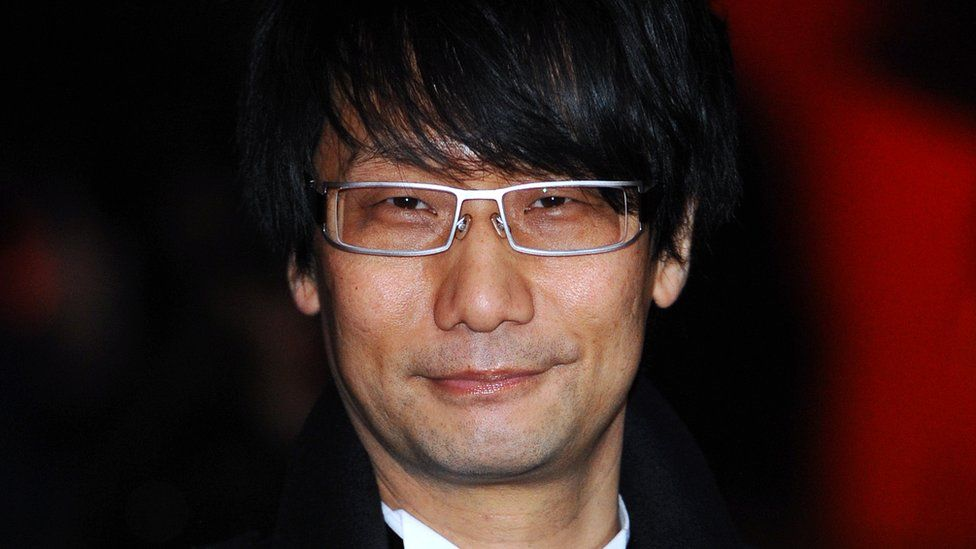

La légende Hideo Kojima [小島 秀夫]
(Publié le par Chuck Norris

- Naissance : 24 août 1963 (54 ans)
- Nationalité : Japonaise
- Profession : Concepteur et producteur de jeux vidéo
Hideo Kojima (小島 秀夫, Kojima Hideo?) est un créateur de jeu vidéo japonais né le 24 août 1963 à Setagaya. Il est avant tout connu pour sa série de jeux vidéo Metal Gear, vendue à plus de 49 millions d'exemplaires2. Il a également conçu et réalisé les jeux Snatcher, Policenauts et P.T., ainsi que produit les jeux Zone of the Enders, Boktai et Castlevania: Lords of Shadow.
Biographie
Enfance
Il déménagea à l'âge de trois ans et fut élevé dans le Kansai, région japonaise méridionale. Grand fan de cinéma, il réalise plusieurs petits courts métrages en 8 mm au collège. Étant un jeune japonais fan de manga et de robots, il s'intéresse rapidement au jeu vidéo.
Les débuts chez Konami
Il rentre chez Konami en 1986 et commence directement au poste de game planner (chef de projet). Metal Gear sur MSX est sa première production. Jeu d'action, Metal Gear est le précurseur du genre désormais très prisé du jeu d'infiltration.
Succès planétaire de la saga Metal Gear Solid
C'est avec le troisième épisode presque dix ans plus tard, Metal Gear Solid sorti sur PlayStation, que Hideo Kojima fut connu du grand public, grâce à la qualité du scénario et à une réalisation graphique et technique exemplaire qui a fait franchir un cap supplémentaire aux jeux vidéo sur console, par les nouvelles possibilités proposées aux joueurs, mais aussi grâce à sa mise en scène, à mi-chemin entre les chorégraphies Hong Kongaises et l'action Hollywoodienne, qui a imposé depuis un nouveau standard en termes de « prise de vue » de l'action. En ce sens, Metal Gear Solid est une compilation de toute son expérience et du savoir-faire qu'il a acquis durant sa vie de créateur de jeux vidéo, comme avec les titres Snatcher ou Policenauts, inconnus en Occident. Depuis, Kojima est resté fidèle à ses principes, développant et réalisant Metal Gear Solid 2: Sons of Liberty, qui s'écoulera à plus de 7 millions d'exemplaires dans le monde, produisant Zone Of The Enders 1 & 2 et élaborant Boktai 1 & 2, jeux basés sur la luminosité ambiante. Hideo Kojima est promu vice-président de Konami Digital Entertainment, le 1er avril 2011, et a créé son propre studio Kojima Productions.
Kojima annonce lors de la promotion en Europe de Metal Gear Solid 3 que Metal Gear Solid 4 est en développement sur PlayStation 3. Il ajoute qu'il ne réalisera pas cette suite. Mais lors de l'E3, le plus grand salon du jeu vidéo, Kojima révèle qu'il sera bien le directeur de cette suite. Au Tokyo Game Show 2005, Metal Gear Solid 4: Guns of the Patriots est dévoilé de façon bien plus prononcée que lors de l'E3. Il y est montré un univers de guerre post-apocalyptique qui, selon les dires de Kojima, représentera la réalité au même titre que les épisodes précédents symbolisaient des décors de cinéma. Fin 2005, il affirme une nouvelle fois que MGS4 sera le dernier épisode de la série MGS auquel il participera en tant que chef de projet, mais confirme que la série des Metal Gear continuera bien, et ce malgré la fin de la période Solid Snake.
Pendant l'E3 2009, il annonce Metal Gear Rising: Revengeance sur PlayStation 3 et Xbox 360 et Metal Gear Solid: Peace Walker sur PSP. À partir du 1er avril 2011, Hideo Kojima devient vice-président de Konami Digital Entertainment aux côtés de Shinji Enomoto. Lors de la Game Developers Conference 2013, Kojima dévoile Metal Gear Solid V: The Phantom Pain.